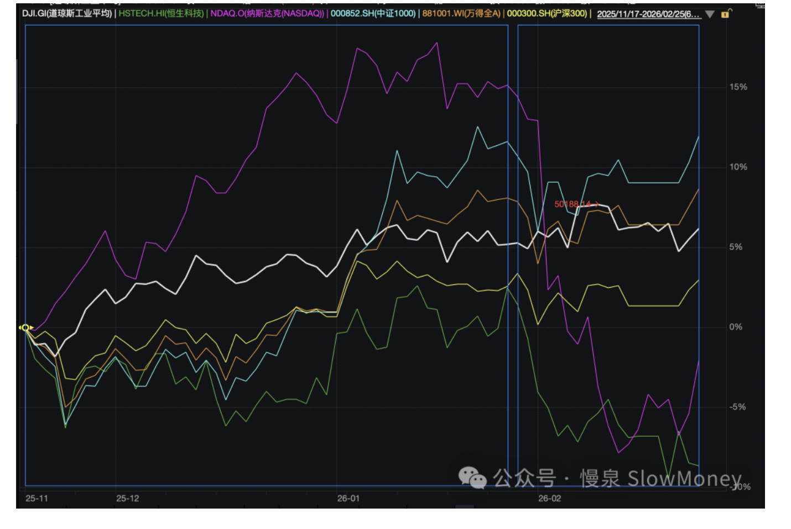
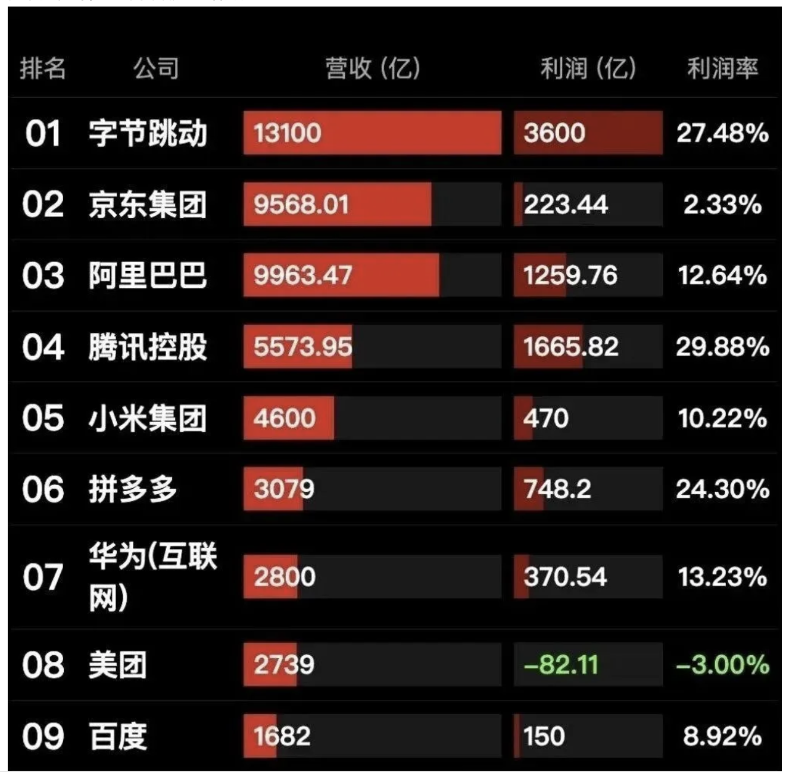
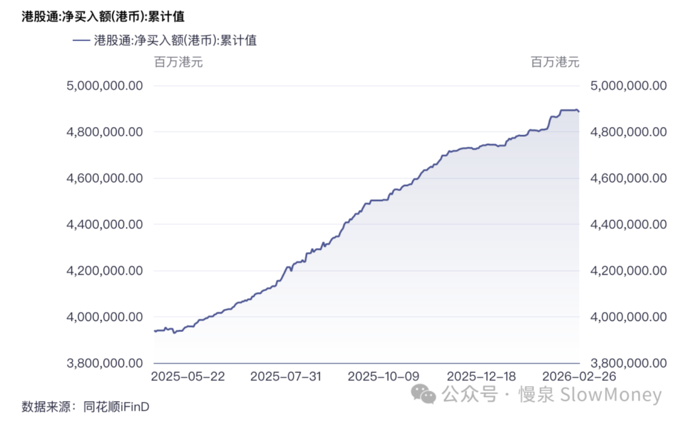
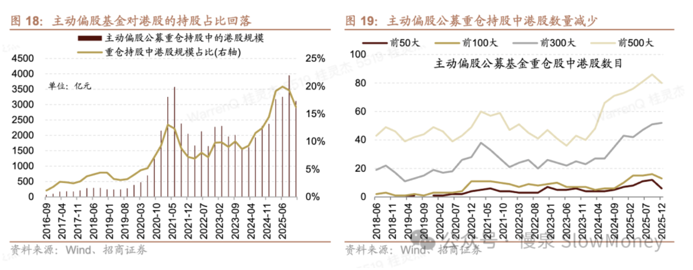
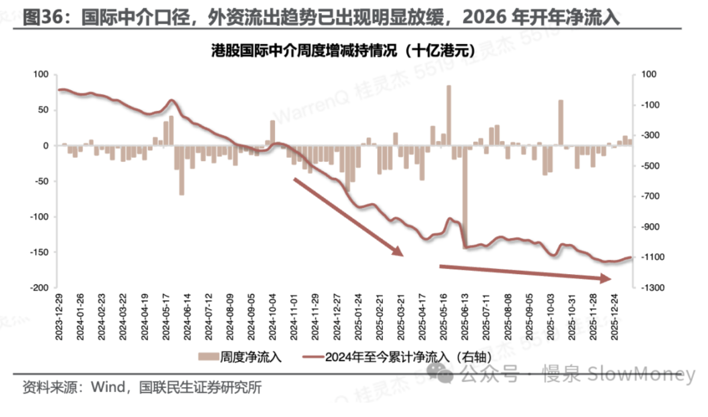
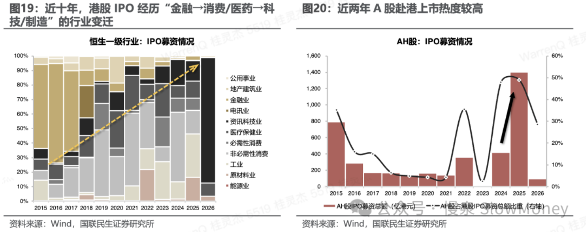

宏观讨论20260226-恒爹科技谁是谁的爹
2026-02-26 · 恒爹科技，谁是谁的爹？ · 宏观讨论（补档）
恒生指数从去年 11 月份开始跟国内主流指数分化，一路走弱——到 2026 年 2 月底，与主流指数的差距扩大到 10% 以上。恒爹科技，你俩谁是谁的爹？
谁是谁的爹？
恒生指数从 2025 年 11 月份跟国内主流指数开始分化，分为两个阶段。在此期间表现最好的是中证 1000 和 Wind 全 A 指数；其次是沪深 300 和道指，以工业和蓝筹为主；表现最差的是纳斯达克和恒生科技，跌幅达大个位数。

第一阶段：2025 年 11 月到 2026 年 1 月底，涨幅低于主流指数，之前也写了一篇文章分析（见《宏观讨论20251220-港股怎么了》），原因是即时零售投入影响业绩和新能源汽车的预期悲观，压制了指数表现。
第二阶段：2026 年 1 月底至今，跟随纳斯达克下跌，跟主流指数差距扩大到 10% 以上。
所以，他们谁是谁的爹？
下跌是因为字节？
有分析认为，2025 年字节的盈利是其他公司的总和，因此在字节发力的情况下，会在各个方向冲击恒生科技权重指数。

资金流看恒生科技
国内仍然流入，速度趋缓。公募基金和北向资金在四季度买入力度下降。


外资仍然在流出，流出放缓。受风险偏好影响，持续的流出叠加海外市场的震荡。

IPO 和解禁冲击
IPO 的扩张和解禁会持续压制表现。近十年港股 IPO 经历了「金融→消费/医药→科技/制造」的行业变迁，近两年 A 股赴港上市热度较高。

so，恒爹么？
- 国内投机氛围热烈，美股震荡，香港市场整体表现会继续不及 A 股，港股的价值分红资产会持续压制国内分红资产表现。
- 炒主题在 A 股，买资产找港股。
- 资金层面：外资增持新兴市场资产，内资持仓占比仍然比较高，预计流入将保持低速。
- 外资审美和海外风险偏好对港股影响大。
- IPO 的扩张和解禁会持续压制表现，特别是现在很多制造业 A/H 两地上市，跟之前互联网、创新药一地上市不一样，长期持有的概率不大。
咱就说，既然这么牛逼，为什么字节需要上市呢？
原文 / 观点：Matt · johsnon0827@gmail.com